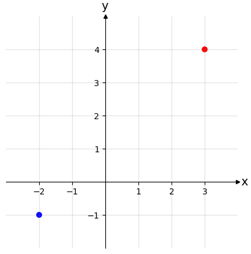
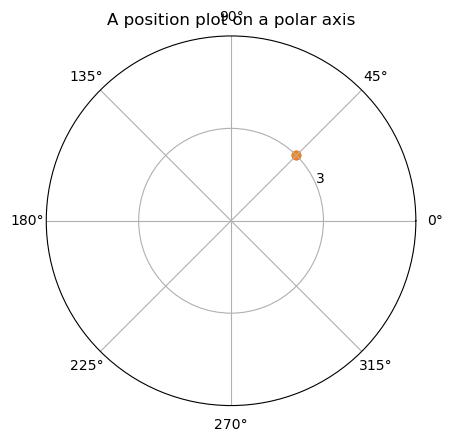
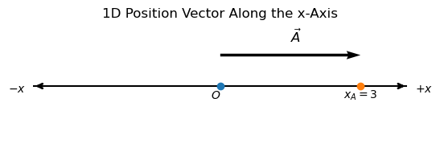
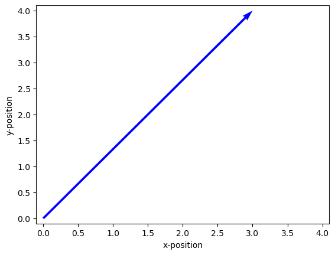
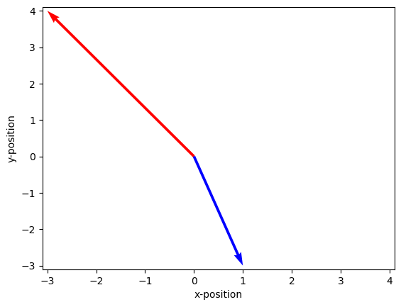

C.1.2 Position Vector#
C1.2.1 Position#
The position is the location of a point within a certain reference frame or coordinate system and is specified by a set of numbers indicating the distance from the origin of the frame. As we saw in PHASE D, x = 3 m describes the point in a 1D Cartesian coordinate system that is 3 meters away from the origin in the positive direction. For a 2D system, we will need two numbers to describe a point: example \((x,y) = (3~\textrm{m},4~\textrm{m})\) is the point that is 3 meters away from the origin along the positive \(x\)-axis and 4 meters away from the origin along the positive \(y\)-axis.
Example: Plotting 2D Cartesian Reference Frame and Point Position#
We can make a plot to create a visual interpretation of a reference frame and a point (using Python script below). In the first example, we have a 2D Cartesian reference frame and two points given by \((x_1,y_1) = (3~\textrm{m},4~\textrm{m})\) and \((x_2,y_2) = (-2~\textrm{m},-1~\textrm{m})\)

Example: Plotting 2D Polar Reference Frame and Point Position#
In a polar reference frame, the position is given by a set of numbers (r,\(\theta\)) indicating the distance away from the origin and the angle of rotation away from the positive x-axis (or horizontal axis). Example (r,\(\theta\)) = (3 m,\(\frac{\pi}{4}\) rad), where the angle here is given in radians.

C1.2.2 Position Vector#
The position vector is the first vector we encounter in our physics course. Consider a 1D number line (1D Cartesian reference frame with units of meters), where we consider a point \(x_A = +3\) m. The directed line segment pointing from \(x = 0\) to \(x_A\) is a vector \(\vec{x}_{A}\). We refer to this vector as the position vector for point A.


Position Vector — Definition
The position vector is the directed line segment from the origin of a given reference system to a point in the coordinate space.
NOTE: if we pursue further knowledge in algebra, we will learn that the position vector is not a true vector, but a quantity known as a pseudo vector.
To fully explore vector nature for this course, we will mostly work in a 2D reference system.
Position Vectors Using Python#
We can write a small Python script to plot a vector for us (for those of you interested in it):

Below is a code that can plot two position vectors. This code is a little more complex, but if we wanted to plot many position vectors, this code would be more appropriate to use as a starting point.

Box Activity 1 — Sketching Two Position Vectors
Task:
You are given two position vectors in the \(xy\)-plane:
and
By hand: On graph paper, draw an \(x\)-axis and \(y\)-axis and sketch both vectors as arrows starting at the origin.
Label the arrow tips clearly as \(\vec{r}_1\) and \(\vec{r}_2\).
With Python: Write a short script that displays both vectors on the same plot, with the axes and a grid.
A Possible Solution Guide
\(\vec{r}_1\) starts at \((0,0)\) and ends at \((-3,-1)\), so it points into the third quadrant (left and down).
\(\vec{r}_2\) starts at \((0,0)\) and ends at \((1,4)\), so it points into the first quadrant (right and up).
A correct sketch will show both arrows from the origin to their respective endpoints, with the endpoints labeled.